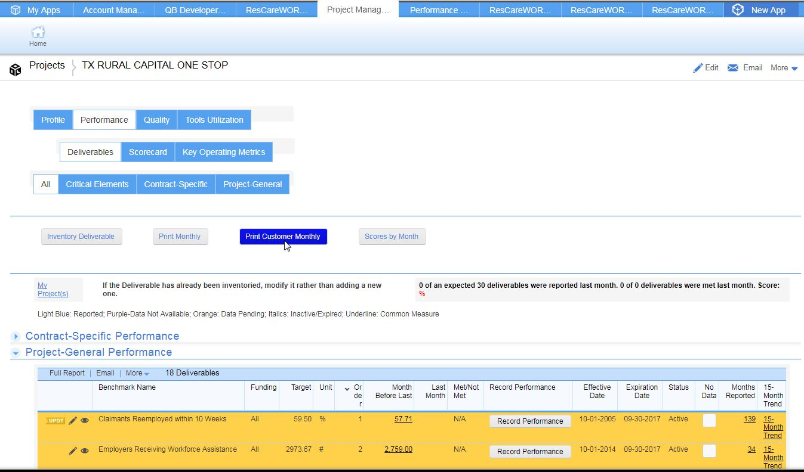
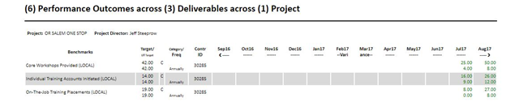

Customer Performance Report Work Instructions
1) While viewing a project’s inventoried deliverables, select the Edit (pencil) icon to edit a deliverable for inclusion in the Customer Report.
2) Locate the red font in the center of the performance section and change the value of the [Include in Customer Report?] field to “Yes”. A confirmation dialog box will appear. Select “OK”. Select “Save & close” in the top right hand corner of the page.

3) Access the Customer Monthly report by blue button labeled “Print Customer Monthly”.

Step 4) The report will open up in a new tab. You may use your snippet tool of choice to capture the portions of the report you want to insert in the overall Monthly Customer Report. Below is an example report.

Created with the Personal Edition of HelpNDoc: Free CHM Help documentation generator